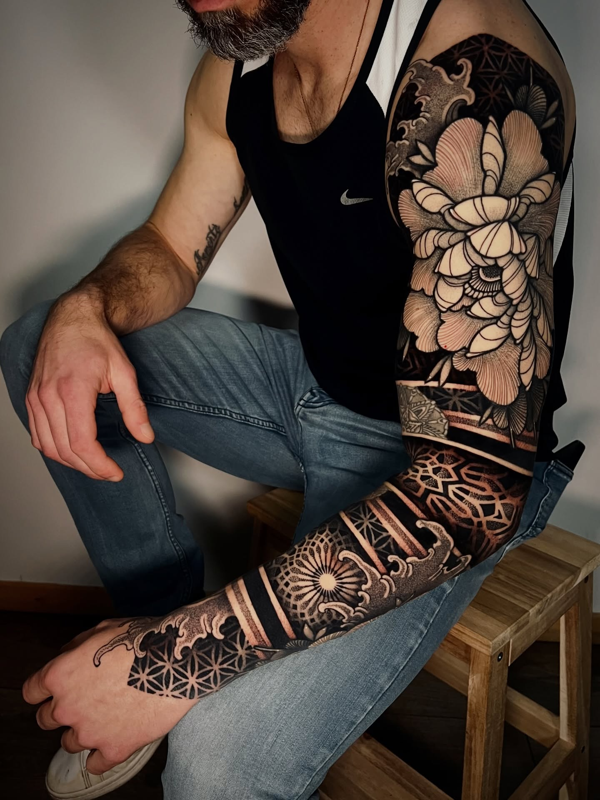
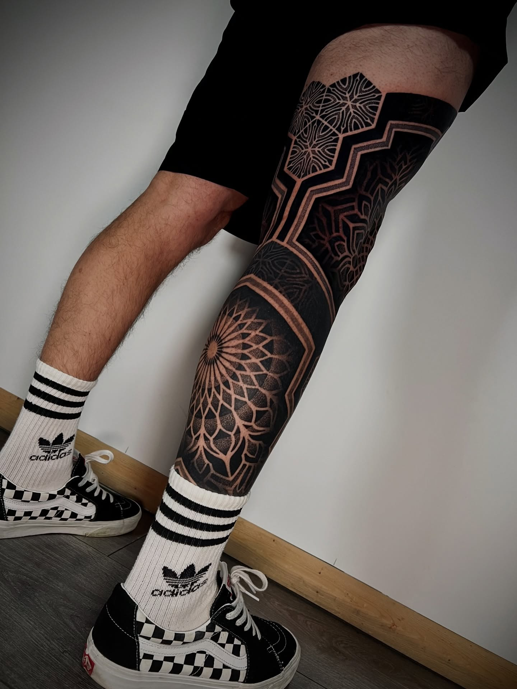

Clément Berdah's work carries a patient kind of certainty. The pieces feel measured, but not cold, sacred without turning ornamental for its own sake, and always aware of the body they live on. This updated feature pulls six of the clearest ideas from the new Berdah issue material and lets them sit closer to the surface.
Q.01On style
"I don't believe style is something you acquire all at once, like unlocking a new level. It's something that builds progressively, a patient accumulation of small things gathered over time."
Berdah's line has that exact feeling. Nothing is rushed toward a signature. The recognisable language comes from repetition, editing, and staying with the same problems long enough for them to deepen.
Q.02On origin
"After a degree in architecture and four years in the field, I felt a real need for change. Tattooing had been calling me for a long time, even before I started, I was already drawing mandalas and dotwork patterns as a form of meditation."
The architecture background matters. You can feel it in the way weight is distributed, in how forms repeat without collapsing into decoration, and in the sense that every motif has to carry structural consequence.
"Style is a patient accumulation. Flow comes first. The elements come second."



Q.03On flow
"What comes first in any composition is the flow and the adaptation to the person's morphology. Following the curves of the body, making sure the tattoo deforms naturally with movement, that's what interests me first. The choice of elements comes second."
That distinction is crucial. In weaker geometric work, the symbol arrives before the body. Berdah reverses the order. The body proposes the rhythm, then the piece earns its imagery.
Q.04On tension
"I enjoy working organic flows into the structures, and bringing in the organic through floral elements, irregularity in contrast with more precise, geometric elements. That tension between the two is something I actively look for."
It is the pressure between precision and looseness that keeps the compositions alive. Too much purity and the piece turns sterile. Too much softness and the geometry loses authority.
Q.05On sacred geometry
"The Flower of Life is my favorite, the ultimate creation motif. What fascinates me is seeing elements of sacred geometry appear all over the world, in eras when people couldn't travel. There must be something deeper to all of this."
He approaches sacred geometry less as branding and more as recurrence, forms that continue to return because they remain visually and spiritually charged. That attitude is what keeps the work from slipping into cliché.
Q.06On the French scene
"France genuinely has a large and prolific geometric scene. What strikes me most is the goodwill between artists, we respect each other, there's a real sense of camaraderie. No active competition, just mutual support and sharing."
That generosity reads in the work too. The pieces do not shout. They hold. They trust the viewer to meet them halfway.